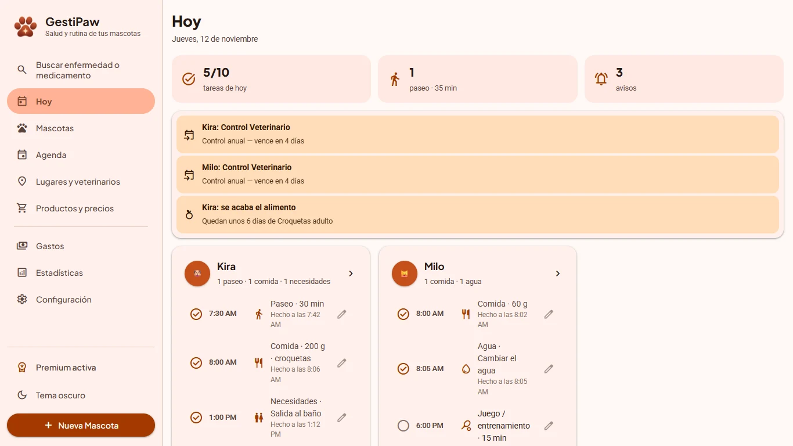
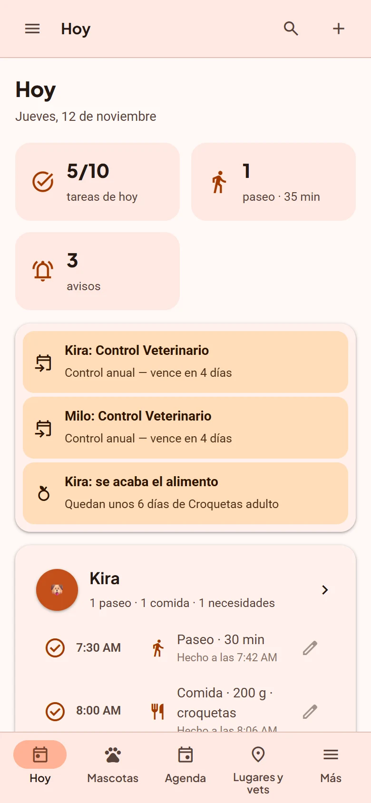
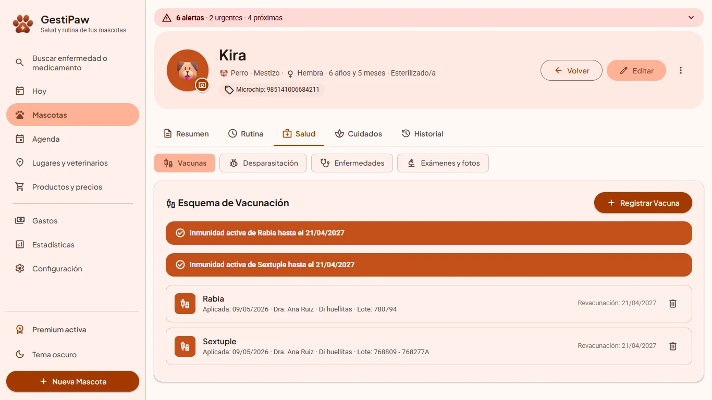
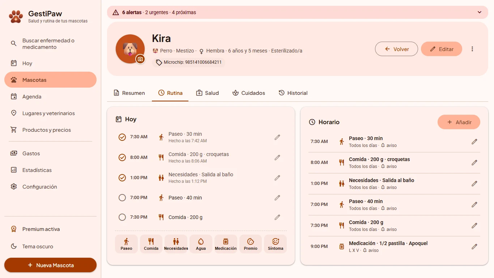
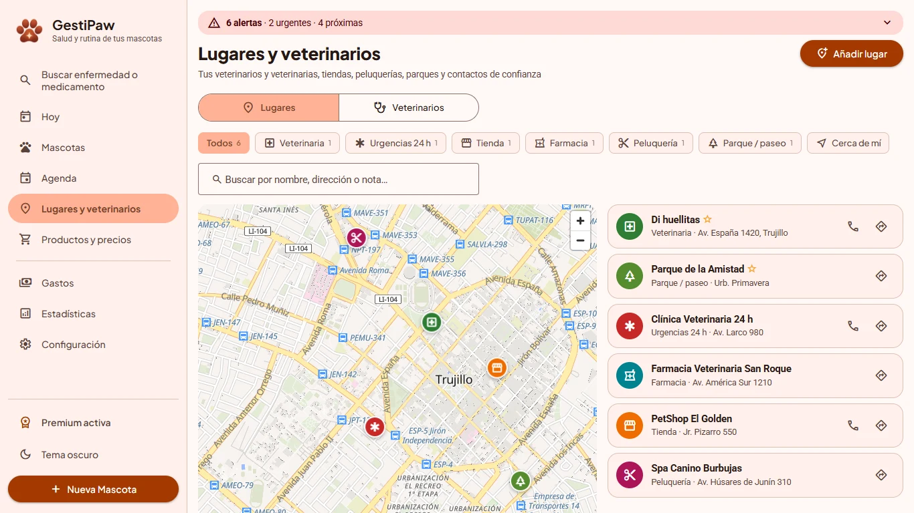
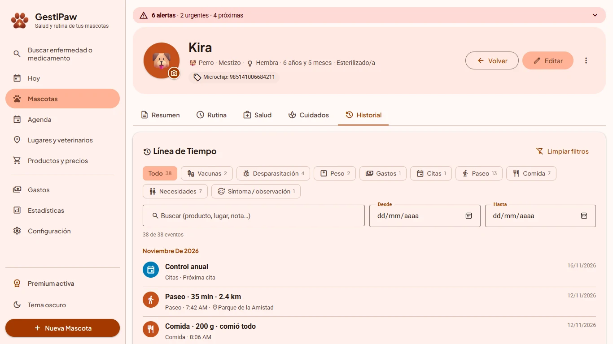
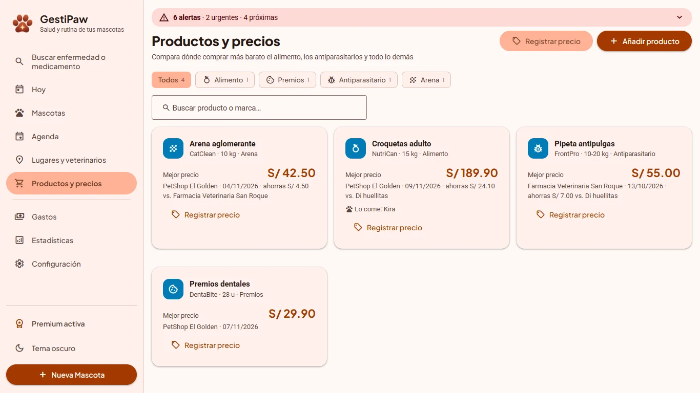
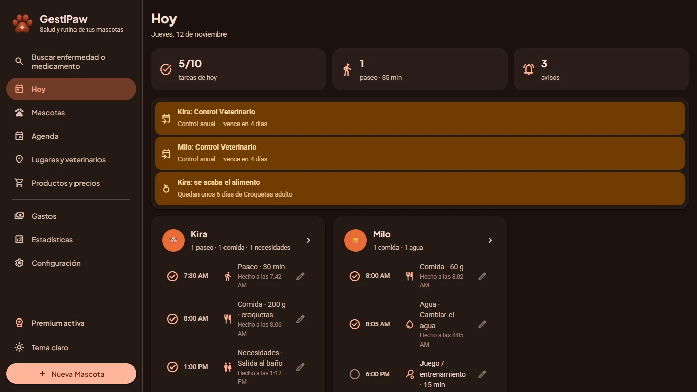

Todo sobre tu mascota,
siempre a mano.
Vacunas, paseos, comidas, veterinarios y gastos en un solo lugar, con avisos antes de que algo venza. Funciona sin internet.


Cuidar a tu mascota es fácil. Acordarse de todo, no tanto.
Fechas en papelitos, la libreta del veterinario perdida, el alimento que se acaba un domingo. GestiPaw lo ordena por ti.
Una app para toda la vida de tu mascota
Pensada para el día a día, no solo para la visita al veterinario.
El día de tus mascotas, de un vistazo
Abre GestiPaw y ve qué falta hacer hoy con cada una.
- Paseos, comidas, salidas al baño, agua y medicación
- Marca lo hecho con un toque; lo atrasado se resalta
- Avisos de vacunas, citas, cumpleaños y alimento por acabarse
Vacunas y desparasitación sin olvidos
La libreta sanitaria completa, siempre contigo.
- Próxima dosis calculada sola, con aviso antes de que venza
- Diagnósticos, tratamientos, exámenes y archivos adjuntos
- Peso, y glucosa e insulina para mascotas diabéticas
- Pasaporte digital de cada mascota

Su horario, su diario y su comida
Arma la rutina de cada mascota y lleva un diario de lo que hace.
- Horario por días, con uno sugerido para perros y gatos
- Diario: duración y distancia del paseo, apetito, necesidades, síntomas
- Resumen de los últimos 7 días
- Te avisa antes de que se acabe la bolsa de alimento

Tu veterinaria, tiendas y parques en el mapa
Todos los lugares de tu mascota, con todo lo que se hizo en cada uno.
- Veterinarias, urgencias 24 h, tiendas, peluquerías y parques
- "Cómo llegar", llamar o escribir por WhatsApp con un toque
- Pega un enlace de Google Maps y GestiPaw ubica el lugar
- Veterinarios: en qué veterinarias atienden o si van a domicilio

Todo lo que se le ha hecho, en una línea de tiempo
Ideal para mostrarle al veterinario.
- Vacunas, diagnósticos, exámenes, aseos, paseos y gastos juntos
- Filtros por tipo, fechas y texto
- Quién lo atendió y dónde

Compra donde conviene
Guarda lo que compras y compara precios entre tiendas.
- Mejor precio por producto y cuánto ahorras
- Historial de precios por tienda
- "Lo compré" lo registra también como gasto

Claro, oscuro y tus colores
Tema claro, oscuro o automático, y 7 colores para elegir. En la PC y en el celular.
- Funciona sin internet: tus datos están en tu equipo
- Respaldo con un archivo, gratis
- Sincronización con tu Google Drive entre equipos Premium

Todo lo que trae GestiPaw
Sin módulos aparte ni sorpresas.
Empieza gratis. Paga una sola vez si lo necesitas.
Sin suscripción, sin renovaciones y sin publicidad.
- 1 mascota
- Salud, rutina, diario y recordatorios
- Historial completo
- Veterinarios y lugares con mapa
- Gastos y estadísticas
- Respaldo con un archivo
- Todo lo de Gratis
- Mascotas ilimitadas
- Sincronización con Google Drive entre tus equipos
- Productos y precios
- Ficha médica en PDF y exportación a CSV
Lo que más nos preguntan
¿Es gratis?
Sí. GestiPaw es gratis para 1 mascota, sin límite de tiempo y sin publicidad. Si tienes más mascotas o quieres sincronizar entre equipos, GestiPaw Premium es un pago único de US$9.99.
¿Es una suscripción?
No. Premium se paga una sola vez y es tuyo de por vida, con las actualizaciones incluidas.
¿Necesito internet o una cuenta?
No. GestiPaw funciona sin internet y sin crear cuentas. Solo el mapa y la sincronización con Google Drive usan internet.
¿Dónde quedan mis datos?
En tu equipo. Si activas la sincronización (Premium), también en la carpeta privada de la app en tu propio Google Drive. Nosotros no vemos tus datos. Política de privacidad.
¿Puedo usarlo en la PC y en el celular?
Sí: GestiPaw está para Windows y Android. Con Premium, tus datos se sincronizan entre tus equipos a través de tu Google Drive, y activas Premium en cada uno con el mismo correo.
¿Sirve para gatos y otras mascotas?
Sí. Tiene catálogos de vacunas, razas y rutina sugerida para perros y gatos, y puedes registrar cualquier mascota.
¿Cómo activo Premium después de comprar?
En GestiPaw ve a Configuración → Premium, escribe el correo con el que pagaste y toca "Enviar código". Te llega un código de 6 dígitos desde gestipaw@gmail.com; escríbelo y listo.
¿Y si no me convence?
Tienes 14 días desde la compra para pedir el reembolso completo. Política de reembolsos.
¿Reemplaza al veterinario?
No. GestiPaw es una herramienta para registrar y recordar; ante cualquier duda sobre la salud de tu mascota, consulta a un veterinario.
Dale a tu mascota el cuidado que merece
Descarga GestiPaw gratis y empieza hoy.